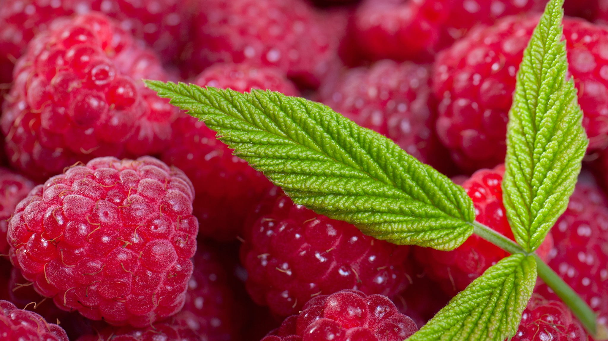

В мирах D&D слова и музыка это не просто колебания воздуха, тут они содержат в себе силу.

Наиболее сильной чертой бардов является их исключительная разносторонность. Многие барды предпочитают держаться не на передовой в бою, используя свою магию для вдохновения союзников и препятствования противникам на расстоянии. Но барды способны защищать себя и в ближнем бою, при необходимости используя магию для укрепления своих клинков и доспехов.